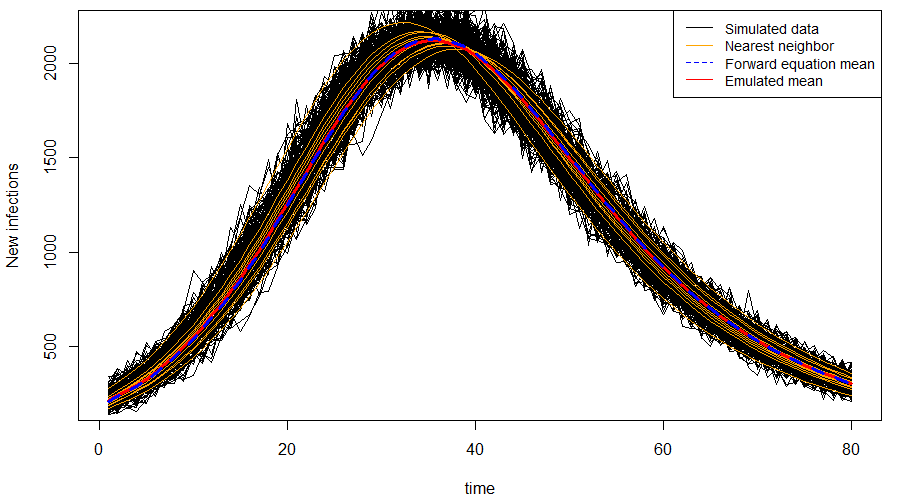

Research
Approximating a spatial SIR process
 (preprint) Parker Trostle, Joe Guinness, and Brian J. Reich. (2022) A Gaussian-process approximation to a spatial SIR process using moment closures and emulators. https://doi.org/10.48550/arXiv.2208.03157.
We propose a Bayesian hierarchical model for noisy counts of new, spatially-indexed infections. We model the underlying dynamics of these new infections using a stochastic, spatial SIR process. We approximate this complex process using a Gaussian process using a moment-closure approach. This leads to coupled ODEs for the evolution of the moments in time, so we demonstrate how to use emulators to approximate the means and covariances of this Gaussian process. We apply our methodology to counts of Zika infections in Brazil.
Code is available at https://github.com/jptrostle/SpatialSIRGPMC.
Farm-level PEDV infections
 Parker Trostle, Cesar A. Corzo, Brian J. Reich, and Gustavo Machado. (2022) A discrete-time survival model for porcine epidemic diarrhea virus. Transboundary and Emerging Diseases. https://doi.org/10.1111/tbed.14739.
Parker Trostle, Cesar A. Corzo, Brian J. Reich, and Gustavo Machado. (2022) A discrete-time survival model for porcine epidemic diarrhea virus. Transboundary and Emerging Diseases. https://doi.org/10.1111/tbed.14739.
Porcine epidemic diarrhea virus (PEDV) arrived in the United States in 2013 and still spreads among farms today. We modeled new infections as a function of local transmission (nearby farm to nearby farm), pig movements (the shipment of pigs between farms of the same production system), and vehicle movements (e.g., feed trucks driving between farms). A key component to our methodology is interacting these effects with source-farm infection status.
Unfortunately because of data confidentiality, we are unable to share data or code for this work.